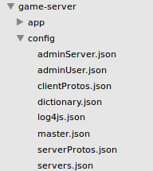
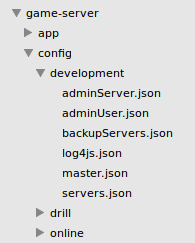

pomelo中提供channel服务，主要用在具体服务器中保存用户信息，并提供消息发送服务；但是channel只能在具体服务器中进行存储，不能提供全局服务器中用户信息存储的功能。pomelo-globalchannel-plugin主要功能就是提供全局用户信息的存储。
在app.js中配置
var globalChannel = require('pomelo-globalchannel-plugin');
app.use(globalChannel, {globalChannel: {
host: '127.0.0.1',
port: 6379,
db: '0' // optinal, from 0 to 15 with default redis configure
}});
获取及使用方法
var globalChannelService = app.get('globalChannelService');
globalChannelService.add(name, uid, sid, function() {});
globalChannelService.pushMessage(stype, route, msg, name, opts, function() {});
add a member into channel
remove user from channel
get members by frontend server id
get members by channel name
send message by global channel
destroy a global channel
pomelo-zookeeper-plugin是为pomelo的集群管理提供zookeeper服务，pomelo默认的集群管理方式为master-slaves；对于集群较小的情况这种管理模式会非常灵活方便，但是在集群较大的情况下可能会出现一定的问题。zookeeper是一个常用的服务器集群管理的框架，pomelo-zookeeper-plugin通过引入zookeeper为pomelo集群提供基于zookeeper的集群管理方法。如果使用pomelo-zookeeper-plugin，就需要关闭原有的pomelo的集群管理模式。
var zookeeper = require('pomelo-zookeeper-plugin');
app.configure('production|development', function() {
// close master cluster management
app.set('masterConfig', {
closeWatcher: true
});
// close master cluster management
app.set('monitorConfig', {
closeWatcher: true
});
app.use(zookeeper, {
zookeeper: {
server: '127.0.0.1:2181',
path: '/pomelo/servers',
username: 'pomelo',
password: 'pomelo'
}
});
});
pomelo-status-plugin是一个全局的用户状态存储的插件，使用该插件可以对用户所在前端服务器进行查询，同时还能在全局范围内给具体用户进行消息推送。
app.js中配置
var status = require('pomelo-status-plugin');
app.use(status, {status: {
host: '127.0.0.1',
port: 6379
}});
获取及使用方法
var statusService = app.get('statusService');
statusService.getSidsByUid(uid, function(err, list) {});
statusService.pushByUids(uids, route, msg, function(err, fails) {});
get frontend server id by user id
在pomelo1.0里提供了一个服务器自动扩展的插件，其主要原理是监控某一类型的服务器，监控的指标现在暂时提供cpu和memory，当这一类型的服务器的某项监控指标超过之前设置的阈值时，服务器就自动扩展，扩展服务器的数量可以由用户进行配置。
使用方法：
//app.js配置方法
app.configure('production|development', 'master', function() {
app.use(scale, {
scale: {
cpu: {
chat: 5,
interval: 10 * 1000,
increasement: 1
},
memory: {
connector: 5,
interval: 15 * 1000,
increasement: 1
},
backup: 'config/development/backupServers.json'
}
});
});
//backupServer.json配置
{
"connector":[
{"id":"backup-connector-server-1", "host":"127.0.0.1", "port":4053, "clientPort": 3053, "frontend": true},
{"id":"backup-connector-server-2", "host":"127.0.0.1", "port":4054, "clientPort": 3054, "frontend": true},
{"id":"backup-connector-server-3", "host":"127.0.0.1", "port":4055, "clientPort": 3055, "frontend": true}
],
"chat":[
{"id":"backup-chat-server-1", "host":"127.0.0.1", "port":6053},
{"id":"backup-chat-server-2", "host":"127.0.0.1", "port":6054},
{"id":"backup-chat-server-3", "host":"127.0.0.1", "port":6055}
]
}
配置参数说明：
现在监控指标包括cpu和memory两项，在每一个监控指标内可以有监控的服务器类型，例如chat：5，这样就表示chat类型的服务器的阈值为5%，当chat类型的服务器cpu的平均值超过5%后，系统将自动扩展服务器，服务器一次扩展的数量由increasement参数决定，例如increasement参数为1，则表示每次超过阈值后扩展1个服务器，扩展服务器的列表由用户指定，backup参数就是扩展的服务器列表；另外interval参数表示系统检测时间，单位是秒，例如interval: 15 * 1000表示系统每15秒检测一次相应的指标，如果超过该指标则进行相应的扩展。
github地址： pomelo-scale-plugin
该插件可以监控指定目录下的所有csv格式的配置文件, 并在某个文件被改变时自动地将其热加载进入Pomelo.
该插件主要使用csv模块来解析csv配置文件, 使用fs.watchFile函数来监控文件变化事件. 当Pomelo框架启动该插件中的组件时, 组件会加载给定文件夹中的所有csv配置文件, 并为每个文件加一个watcher. 以此来实现csv配置文件自动热加载的功能.
npm install pomelo-data-plugin
./pomelo-data-plugin-demo/config/data/team.csv
# 队伍名称配置表
# 队名编号, 队名
id,teamName
5,The Lord of the Rings
6,The Fast and the Furious
上面的csv配置文件中, 以#开头的行是注释语句, 正文的第一行应为列名(id为该文件的主键列名, 为必须列), 下面的行是对应列名的具体数据.
var dataPlugin = require('pomelo-data-plugin');
... ...
app.configure('production|development', function() {
...
app.use(dataPlugin, {
watcher: {
dir: __dirname + '/config/data',
idx: 'id',
interval: 3000
}
});
...
});
... ...
... ...
var teamConf = app.get('dataService').get('team');
... ...
... ...
上面代码中的dir即为需要监控的配置文件夹; idx为所有csv配置文件的主键列名(如:team.csv所示的id); interval为fs.watchFile函数测试其所监控文件改变的时间间隔, 单位为毫秒.
pomelo自身支持自定义的protobuf,后来根据网友的需求希望能够支持protobuf.js。
ProtoBuf.js本身支持json和proto两种格式的配置，考虑到之前pomelo自身使用的protobuf是json格式，所以现在对于使用pomelo-protobuf-plugin只支持json格式的protos定义。
使用最新的pomelo-jsclient-websocket, 同时在客户端添加命名为pomelo-decodeIO-protobuf的component，并将其挂载到window对象下。对应的component.js如下所示：
{
"name": "boot",
"description": "Main app boot component",
"dependencies": {
"component/emitter":"master",
"NetEase/pomelo-protocol": "master",
"pomelonode/pomelo-decodeIO-protobuf": "master",
"pomelonode/pomelo-jsclient-websocket": "master",
"component/jquery": "*"
},
"scripts": ["index.js"]
}
对应的index.js如下所示：
var Emitter = require('emitter');
window.EventEmitter = Emitter;
var protocol = require('pomelo-protocol');
window.Protocol = protocol;
var protobuf = require('pomelo-decodeIO-protobuf');
window.decodeIO_protobuf = protobuf;
var pomelo = require('pomelo-jsclient-websocket');
window.pomelo = pomelo;
var jquery = require('jquery');
window.$ = jquery;
在服务端需要使用pomelo-protobuf-plugin，并在app.js中使用对应的插件，具体配置如下：
app.configure('production|development', function() {
app.use(protobuf, {
protobuf: {
}
});
});
pomelo原有的protobuf和decodeIO-protobufjs不能同时使用，即不能同时使用pomelo-protobuf-plugin插件并在前端服务器开启useProtobuf。
考虑到与原有的protobuf保持一致，pomelo 0.9版本中支持的decodeIO-protobuf同样采用serverProtos.json和clientProtos.json，不支持decodeIO-protobufjs中的.proto格式，对于.proto格式可以采用decodeIO-protobufjs提供的命令行工具转换成json格式。
具体的使用示例可以参考lordofpomelo decodeIO-protobuf分支。
对于浏览器来说，HTML5中已经支持了websocket，因此使用支持websocket的浏览器可以直接与服务端的hybridconnector建立通信。而对于比较旧的浏览器来说，还没有支持websocket的，可以使用基于socket.io的方式进行与服务端建立连接。因此，对于Web端，pomelo提供了两套开发库，分别适用于支持websocket的浏览器和不支持websocket的浏览器，这两套开发库的链接如下，适用于socket.io的pomelo-jsclient-socket.io以及适用于websocket的pomelo-jsclient-websocket。
对于使用socket.io的客户端SDK来说，其依赖socket.io-client, 需要在引入pomelo-client.js之前引入socket.io-client.js文件.
<script src="$PATH/socket.io-client.js"></script>
<script src="$PATH/pomelo-client.js"></script>或者可以使用bower来进行管理.
bower install pomelo-jsclient-socket.io
注意:关于低版本IE浏览器(如IE6,7,8),因为浏览器并不支持Uint16Array对象,所以无法使用pomelo-protocol.可以直接使用JSON进行通讯. 需要使用pomelo-jsclient-socket.io中的pomelo-client-ie.js
<script src="$PATH/socket.io-client.js"></script>
<script src="$PATH/pomelo-client-ie.js"></script>另外还需要修改game-server/app.js文件
var encode = function(reqId, route, msg) {
if (!!reqId) {
return{
id: reqId,
body: msg
};
} else {
var m = {
route: route,
body: msg
};
return JSON.stringify(m);
}
};
var decode = function(data) {
data = JSON.parse(data);
return {
id: data.id,
route: data.route,
body: data.msg
};
};
app.configure('production|development', 'connector|gate', function() {
app.set('connectorConfig', {
connector: pomelo.connectors.sioconnector,
encode: encode,
decode: decode
});
});<**>IE5 6 7不支持JSON.stringify()方法，可以引入json2.js这个文件，json2.js提供了json的序列化和反序列化方法，可以将一个 json对象转换成json字符串，也可以将一个json字符串转换成一个json对象。json2.js下载可以查找一下百度，不太会上传，呵呵。
在IE8和以下客户端pomelo.init初始化的时候值为‘undefined’，找到了一个解决的办法，就是在最前面不引用“var pomelo = window.pomelo;”这条语句，经测试IE5 6 7 8和其他浏览器，都通过，不报错，编程学得太烂，只找到了方法，不知道原理。
对于使用websocket的客户端SDK来说,可直接引入pomelo-jsclient-websocket中的pomelo-client.js文件即可
<script src="$PATH/pomelo-client.js"></script>或者可以使用bower来进行管理.
bower install pomelo-jsclient-websocket
无论是socket.io的还是websocket的，都提供了统一的API，下面对这些API进行简单的介绍。
pomelo.init(params, cb)
//example
pomelo.init({
host: host,
port: port
}, function() {
//callback
});这是往往是客户端的第一次调用，params中应该指出要连接的服务器的ip和端口号，cb会在连接成功后进行回调;
pomelo.request(route, msg, cb)
//example
pomelo.request(route, {
rid: rid
}, function(data) {
console.log(data);
});请求服务，route为服务端的路由，格式为"ServerType.HandlerName.MethodName", msg为请求的内容，cb会响应回来后的回调;
pomelo.notify(route, msg)发送notify，不需要服务器回响应的，因此没有对响应的回调，其他参数含义同request;
pomelo.on(route, cb)这个是从EventEmmiter继承过来的方法，用来对服务端的推送作出响应的。route会用户自定义的，格式一般为"onXXX";
pomelo.disconnect()这个是pomelo主动断开连接的方法。
用户能够通过配置文件或者pomelo-cli的命令addCron和removeCron对定时任务进行动态调度。 定时任务是针对具体服务器而言，例如需要在chat服务器中配置定时任务：
首先在game-server/app/servers/chat目录下增加cron目录，在game-server/app/servers/chat/cron目录下编写具体的执行的任务的代码chatCron.js，例如：
module.exports = function(app) {
return new Cron(app);
};
var Cron = function(app) {
this.app = app;
};
var cron = Cron.prototype;
cron.sendMoney = function() {
console.log('%s server is sending money now!', this.app.serverId);
};
然后在game-server/config/目录下增加定时任务配置文件crons.json，具体配置文件如下所示：
{
"development":{
"chat":[
{"id":1, "time": "0 30 10 * * *", "action": "chatCron.sendMoney"},
{"id":2, "serverId":"chat-server-1", "time": "0 30 10 * * *", "action": "chatCron.sendMoney"}
]
},
"production":{
"chat":[
{"id":1, "time": "0 30 10 * * *", "action": "chatCron.sendMoney"},
{"id":2, "serverId":"chat-server-1", "time": "0 30 10 * * *", "action": "chatCron.sendMoney"}
]
}
}
在配置文件crons.json中，id是定时任务在具体服务器的唯一标识，且不能在同一服务器中重复；time是定时任务执行的具体时间，时间的定义跟linux的定时任务类似，一共包括7个字段，每个字段的具体定义如下：
* * * * * * command to be executed - - - - - - | | | | | | | | | | | +----- day of week (0 - 6) (Sunday=0) | | | | +------- month (0 - 11) | | | +--------- day of month (1 - 31) | | +----------- hour (0 - 23) | +------------- min (0 - 59) +------------- second (0 - 59)
0 30 10 * * * 这就代表每天10:30执行相应任务；serverId是一个可选字段，如果有写该字段则该任务只在该服务器下执行，如果没有该字段则该定时任务在所有同类服务器中执行；action是具体执行任务方法，chatCron.sendMoney则代表执行game-server/app/servers/chat/cron/chatCron.js中的sendMoney方法。
通过pomelo-cli的addCron和removeCron命令可以动态地增加和删除定时任务，其中addCron的必要参数包括：id,action,time；removeCron的必要参数包括：id；serverId和serverType是两者选其一即可。例如：
addCron id=8 'time=0 30 11 * * *' action=chatCron.sendMoney serverId=chat-server-3
removeCron id=8
生命周期回调能够让开发者在不同类型的服务器生命周期中进行具体操作。提供的生命周期回调函数包括：beforeStartup，afterStartup，beforeShutdown，afterStartAll。其具体的功能说明如下：
before application start components callback
after application start components callback
before application stop components callback
after all applications started callback
具体使用方法：在game-server/app/servers/某一类型服务器/ 目录下添加lifecycle.js文件，具体文件内容如下：
module.exports.beforeStartup = function(app, cb) {
// do some operations before application start up
cb();
};
module.exports.afterStartup = function(app, cb) {
// do some operations after application start up
cb();
};
module.exports.beforeShutdown = function(app, cb) {
// do some operations before application shutdown down
cb();
};
module.exports.afterStartAll = function(app) {
// do some operations after all applications start up
};
服务器与master之间的连接需要进行认证以提高服务的安全性，目前在pomelo-admin中提供了一个简单的服务器认证，可以看 admin auth
使用连接认证，需要在 config 目录下添加 adminServer.json 的文件
[{
"type": "connector",
"token": "agarxhqb98rpajloaxn34ga8xrunpagkjwlaw3ruxnpaagl29w4rxn"
}, {
"type": "chat",
"token": "agarxhqb98rpajloaxn34ga8xrunpagkjwlaw3ruxnpaagl29w4rxn"
},{
"type": "gate",
"token": "agarxhqb98rpajloaxn34ga8xrunpagkjwlaw3ruxnpaagl29w4rxn"
}
]
type 是serverType, token 是一个字符串，你可以自己生成
你可以通过自己定义的认证还是来完成认证的工作
具体情况可以参考 admin auth server
考虑到安全性方面的问题，pomelo 1.0版本中增加了对tls及wss协议的支持；在之前的pomelo版本中，提供了hybridconnector和sioconnector；对于sioconnector,其底层使用的是socket.io，socket.io提供了包括websocket和长轮询等几种传输方式，其中websocket默认采用的ws协议，现在pomelo支持wss协议，即用户可以在sioconnector中配置基于wss协议的websocket的通信方式；对于hybridconnector,提供包括原生socket的支持和websocket的支持，针对这两种方式，在pomelo 1.0中提供了两种连接的安全版本即tls和wss,用户可以在使用hybridconnector时，采用安全级别较高的tls或者wss。
使用方法：
支持tls客户端，pomelo现在提供的tls客户端有libpomelo.
app.configure('production|development', 'connector', function() {
app.set('connectorConfig',
{
connector : pomelo.connectors.hybridconnector,
heartbeat : 3,
useDict : true,
useProtobuf : true,
ssl: {
type: 'tls',
key: fs.readFileSync('./keys/server.key'),
cert: fs.readFileSync('./keys/server.crt'),
}
});
});
支持wss客户端, pomelo提供的wss客户端有js客户端.
app.configure('production|development', 'connector', function() {
app.set('connectorConfig',
{
connector : pomelo.connectors.hybridconnector,
heartbeat : 3,
useDict : true,
useProtobuf : true,
ssl: {
type: 'wss',
key: fs.readFileSync('./keys/server.key'),
cert: fs.readFileSync('./keys/server.crt'),
}
});
});
支持socket.io的wss客户端, pomelo提供的socket.io的wss客户端有js客户端.
app.configure('production|development', 'connector', function() {
app.set('connectorConfig',
{
connector : pomelo.connectors.sioconnector,
key: fs.readFileSync('./keys/server.key'),
cert: fs.readFileSync('./keys/server.crt')
});
});
在pomelo 1.0中增加了通过pomelo init 获取wss和socket.io的wss两种客户端及服务端的初始化项目，同时初始化的项目中提供了相应的密钥及证书。注意由于证书是和域名绑定的，所以在打开客户端的时候输入的ip地址为 https://127.0.0.1:3001
在pomelo1.0中支持按照目录结构进行配置相关的配置文件，在之前的版本中pomelo的配置文件如下图所示：

不同环境是根据具体配置文件里的key进行区分，例如：
// servers.json配置
{
"development":{
"connector":[
{"id":"connector-server-1", "host":"127.0.0.1", "port":4050, "clientPort": 3050, "frontend": true}
]
},
"production":{
"connector":[
{"id":"connector-server-1", "host":"127.0.0.1", "port":4050, "clientPort": 3050, "frontend": true}
]
}
}
在pomelo1.0支持根据目录进行配置，如下图所示：

config 目录下是根据环境进行文件配置， 在启动过程中选择不同的环境就会根据相应的环境名称目录加载该目录下的所有配置文件。例如 pomelo start env=online 这样就会加载config/online目录下的所有配置文件。默认会加载development下面的配置文件。在这种情况下，对应的servers.json就不需要根据环境配置，具体配置如下：
{
"connector":[
{"id":"connector-server-1", "host":"127.0.0.1", "port":4050, "clientPort": 3050, "frontend": true}
]
}
PS: 默认还是会直接加载config目录下的配置文件，当config目录下面没有对应的文件系统将才会加载环境名称对应的目录下的配置文件；所以要使用根据环境名称目录进行配置时需要先将config目录下之前的配置文件删除。
开发者可以设置相应的事务处理条件和实际事务处理的方法，同时开发还可以定义事务处理的重试次数。事务的具体执行过程是先执行开发者定义的事务处理条件，如果条件报错则直接终止整个事务，如果条件执行通过，再开始执行相应的事务处理方法，当在事务处理方法执行的过程中出现错误则根据开发者定义的重试次数进行执行重试，默认重试次数为1；所有的事务处理的结果都会在相应的日志文件中进行详细记录，开发者可以根据错误日志对失败的事务进行相应处理；相应的API如下所示：
事务处理方法
具体的使用示例如下：
var conditions = {
test1: function(cb) {
console.log('condition1');
cb();
},
test2: function(cb) {
console.log('condition2');
cb();
}
};
var handlers = {
do1: function(cb) {
console.log('handler1');
cb();
},
do2: function(cb) {
console.log('handler2');
cb();
}
};
app.transaction('test', conditions, handlers, 3);